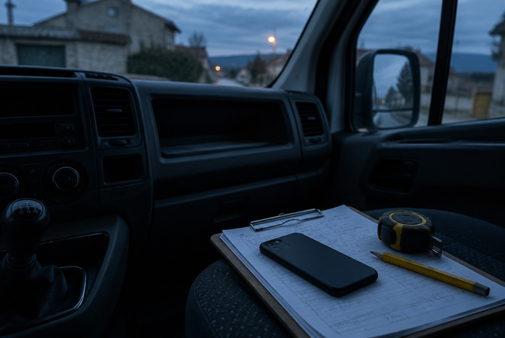
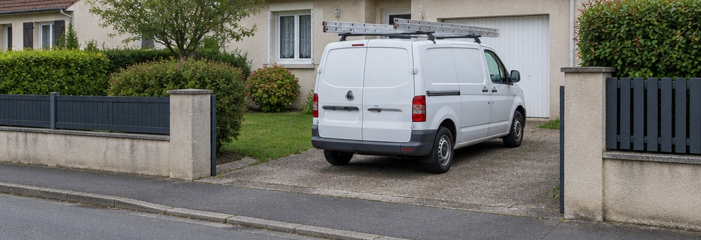

Vous ne savez pas d'où vient l'appel
Le téléphone sonne, vous envoyez un devis, le chantier se signe. Mais ce client, il venait de Google, d'une recherche normale, ou du voisin ? Impossible à dire. Donc impossible de savoir si la pub est rentable.
Vous dépensez en publicité Google, et vous ne savez pas ce qu'elle vous ramène. Trackia vous fait installer, en deux heures, un suivi qui relie chaque euro dépensé aux devis que vous signez. Sans écrire une ligne de code.
Trois situations. Si une seule vous parle, votre suivi ne fonctionne pas — et ça vous coûte tous les mois.
Le téléphone sonne, vous envoyez un devis, le chantier se signe. Mais ce client, il venait de Google, d'une recherche normale, ou du voisin ? Impossible à dire. Donc impossible de savoir si la pub est rentable.
Google compte des clics sur le bouton Contact, des visites de la page tarifs. Pas des demandes de devis. Vous pilotez votre budget avec un chiffre qui ne correspond à personne.
Google ajuste tout seul vos enchères à partir de ce que vous lui dites. Si vous ne lui dites rien de fiable, il achète les clics les moins chers au lieu des clients les plus rentables.

On coupe la campagne qui rapportait, on garde celle qui coûtait, et on augmente le budget en espérant que ça passe.
Chaque étape se pose dans un module de la formation, en suivant des images. À la fin, la chaîne est complète et tourne toute seule.
Google ajoute discrètement à l'adresse de votre site un numéro unique, propre à ce clic. Ce numéro sait de quelle annonce et de quel mot tapé par le visiteur il vient.
Le visiteur se promène sur votre site, le numéro disparaît de l'adresse. On le met de côté dès la première page pour pouvoir le ressortir plus tard.
Quand le visiteur demande un devis, sa demande part avec le numéro du clic, l'annonce et le mot recherché. Vous savez enfin d'où vient cette personne.
Une ligne s'ajoute dans votre tableau de suivi, un mail arrive dans votre boîte. Vous rappelez pendant que le prospect est encore devant son écran.
Quand vous signez, vous cochez une case dans le tableau. Google apprend que ce clic-là valait tel montant — et il part en chercher d'autres comme lui.
Sept modules en PDF, deux heures en tout. Vous ouvrez le PDF d'un côté, votre navigateur de l'autre, et vous avancez.
Les quatre comptes à ouvrir, et le test de cinq minutes qui vous dit si votre installation actuelle est cassée.
L'outil gratuit de Google qui pilote tout le reste, installé sur votre site et vérifié en direct.
Google Analytics branché proprement, et surtout : plus rien compté en double.
Le cœur de la méthode. Le script est écrit par Claude à partir du texte fourni : vous copiez, vous collez, vous vérifiez.
Contact Form 7, WPForms, Elementor, Gravity Forms, Wix, Webflow : votre cas est traité.
Chaque demande s'écrit dans votre tableau et vous alerte par mail, en moins d'une minute.
Le module qui fait baisser votre coût par client. Automatisé une fois, puis plus rien à faire.
Le modèle de tableau de suivi, le fichier d'export vers Google, le tableau de bord à monter en dix minutes, et les douze textes à donner à Claude.

C'est souvent moins qu'une semaine de budget dépensée sur des mots-clés que vous ne pouvez pas mesurer. La différence : dans deux heures, vous saurez lesquels couper.
297€
Accès immédiat, à vie, mises à jour comprises.
Garantie 14 jours : vous suivez les modules, votre suivi ne remonte rien, vous êtes remboursé.
Oui, et c'est tout l'objet de la méthode. Vous ne tapez aucun code. Quand un script est nécessaire, le texte à donner à Claude est fourni mot pour mot : Claude écrit le script, vous le copiez dans l'interface. Vous copiez-collez, vous ne programmez pas.
Tout le reste se passe dans des écrans à boutons, et chaque clic est décrit.
C'est le cas le plus fréquent, et il est traité en détail : installation par extension ou directement dans le thème, puis branchement sur Contact Form 7, WPForms, Gravity Forms ou Elementor. Wix, Squarespace, Shopify, Webflow et les sites sur mesure ont chacun leur variante.
Le premier module commence par là. Vous faites l'inventaire de ce qui tourne vraiment, vous repérez ce qui est posé en double — la cause numéro un des chiffres faux — et vous décidez ce qui reste. Aucun accès à l'agence n'est nécessaire pour ce diagnostic.
Les outils Google sont gratuits. Make, qui fait circuler les demandes, propose un palier gratuit qui suffit à la plupart des activités de services. Au-delà d'un certain nombre de demandes par mois, il faut passer sur un palier payant : le module concerné vous montre comment estimer ça avant de choisir.
Un module montre comment brancher le consentement de Google sur votre bandeau de cookies, et ce que vous collectez exactement à chaque étape.
Soyons clairs : c'est une formation technique, pas un conseil juridique. Pour votre politique de confidentialité, voyez avec votre conseil.
Le suivi, immédiatement : dès la fin du cinquième module, chaque demande apparaît dans votre tableau et votre boîte mail avec sa source.
La partie publicitaire demande du volume. Google a besoin de plusieurs dizaines de devis signés pour apprendre. Le dernier module explique quoi choisir selon le volume que vous faites vraiment.
Avoir Analytics et avoir un suivi qui sert à décider sont deux choses différentes. La plupart des installations qu'on croise comptent des clics sur un bouton, ignorent complètement le numéro du clic publicitaire, et ne renvoient jamais rien à Google Ads. Vous gardez votre compte : la formation le nettoie et le complète.
La méthode est la même d'un site à l'autre : le deuxième prend environ trois fois moins de temps. L'achat couvre un usage pour votre entreprise. Si vous êtes agence ou indépendant et comptez l'appliquer chez des clients, écrivez-nous, il y a une licence pour ça.
Non. Les textes fournis fonctionnent dans la version gratuite : vous collez le texte, vous récupérez le script. L'extension Claude pour Chrome, qui vous guide directement dans les écrans, est un confort, jamais une obligation.
Chaque module se termine par un point de contrôle : ce que vous devez voir à l'écran pour être sûr que l'étape est bonne, et quoi faire si vous voyez autre chose. Les trois pannes les plus fréquentes ont leur procédure de réparation.
Votre budget continue de partir pendant que vous lisez cette page. La seule chose qui change avec Trackia, c'est que vous saurez où.
Accéder à la formation — 297 €